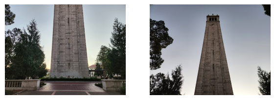
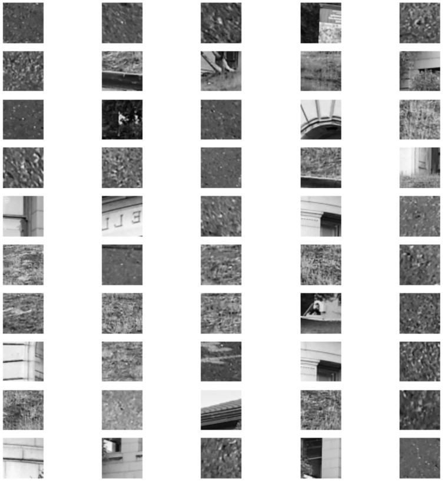

Project 4: Image Warping and Mosaic-ing
By: Andi Liu
1. Introduction
In this project we will be exploring different aspects of image warping with the ultimate goal of image mosaic-ing. For each mosaic, we will take at least two
photographs and register, projective warp, resample, and composite them into mosaics. We will also learn to compute and use homographies to warp images.
Writing the code: We will be re-using some of the basic functions written in the previous projects, for importing, displaying, and saving images. These will be
stored and imported in my utils.py file. We will also be using some functions from project 3 that we used for defining point correspondences between images. These functions will
also be defined in the utils.py file.
Shooting the Pictures
To begin with our project, we will need to procure our images. For each mosaic, the set of images need to be related by projective (perspective) transforms.
We will obtain these by fixing the center of projection and rotating our camera.
Below is the first set of images that we will be using for this project
We will be warping the second image to be in the same plane as the first. In order to do this we first need to label point correspondences between the images.
We will use the tool we wrote in project 3 for this, and obtain the point correspondences depicted below:
Compute The Homographies
Since the images are related by a projective transform (a homography), we will need to figure out what the homography is. We reason out the mathematics needed
in order to compute the homography. (taken from the jupyter notebook I wrote my code on)


Now that we've written a function for computing homographies, we can write a function using our inverse warping process from project 3, that warps one image
into the plane of another through a computed homography. Putting our second image through this function we obtain the following warped image, displayed next to the original.
Here is the warped image next to the other image in the mosaic:

We can see that the angle of the warped image seems slightly misaligned from the other. This is because we used only four points of correspondence and the
homography is determined by eight values, meaning our points uniquely determine a homography. We can improve the alignment by labelling more points of correspondence
and using least squares to compute a homography that most closely aligns with all of them. After modifying our homography function to handle more than 4 points and
recomputing the warp we get a much better result

Now the building in the warped image looks very closely aligned with the building in the first image.
Image Rectification
Now that we've confirmed out function can warp images using homographies, we'll put it to the test by warping some other images. To demonstrate the capabilities
we will choose some features of images that we know to be flat, and warp them so that we appear to be looking at it. Below we show the feature used to compute the homography
as well as the rectified image.


Assembling Mosaics
Now that we are able to warp images into other image's planes, we can put warped images together to create mosaics. After writing a function that overlays one image
onto the other and averages their intersection, we can create some simple mosaics. Below are some mosaics along with their original images:



Part 2: Feature Matching for AutoStitching
Introduction
For the next part of the project we will be implementing feature detection and extraction for the purposes of matching. In order to do this we will implement the
process described in the paper “Multi-Image Matching using Multi-Scale Oriented Patches” by Brown et al. We will use an image with particularly evident features, which
will make it evident whether or not our code is working. The chosen image is a bunch of differently shaped rubix cubes.
Finding Harris Points
The first thing we will implement from the paper is the Harris Corner detector. In order to find Harris corners, we first need to take the x and y spacial derivatives
Then we join them together to form a column gradient vector, and take the outer product of the gradient with itself. This matrix is then used to calculate the Harris values
througout the image. We do this by looking at the ratio of the determinants of this matrix to the trace of the matrix. If the H value is large, this tells us that the image
is changing significantly in both x and y directions at a certain point, meaning that it is highly distinguishable (a Harris corner). Below we depict all the Harris points
our algorithm detects on our image, both with and without the image in the background.
Adaptive Non-maximal Supression (ANMS)
Since our Harris point detector clearly picked up too many points, we want to suppress non-maximum points where there is dense packing, while keeping points that are detected
in sparse areas. For this we will use Adaptive Non-Maximal Suppression, a technique described in the paper wherein points are "suppressed" if there is a more "edge-like" point
nearby, leaving only the most edge-like points in densely populated areas without filtering out points in sparse areas. After implementing this algorithm, we observe the top 50,
150, and 300 points chosen by Adaptive Non-Maximal Suppression.
Feature Descriptors
Now that we have the locations of distinct features, we still need a way to label the features. In order to do this, Brown et al. use gradient-aligned patches that are local
to the image. We will do the same. The first step is to find the gradient and the gradient-orthogonal at each point of interest. When we do this, we convolve the image with a 2D
Gaussian in order to smooth out the gradient surface, so that there is less variability with feature location. Below we show the 50 ANMS points along with the computed gradients
and orthogonals.
After computing the gradient and orthogonal, we will extract a chunk of the local image large enough to rotate and align with the gradient, and then Gaussian blur by a factor of 5
and finally sample the 9 by 9 patch of pixels around our location of interest. We show some original extracted image patches below, followed by 50 examples of image patches before and
after gradient-alignment, gaussian blurring, and then sampling.
Feature Matching
Now that we are able to extract features out of our images, all that remains to do is to match them between images. For this purpose we will use the two images from our first mosaic.
After running our images through the feature extractor we get the following for the first image:
And for the second image we get the following features:
Now, for the matching algorithm we will simply use normalized cross-correlation, however as the paper suggests we will use the Lowe method, which is to only classify two features as
a match if the correlation between the second closest match is a certain threshold below the correlation betweeen the image and the closest match. We see that this gives us very good results.
Depicted below are a few pairs of matches out of 700 points selected out of the ANMS algorithm.
We can see that the results we get are quite good.